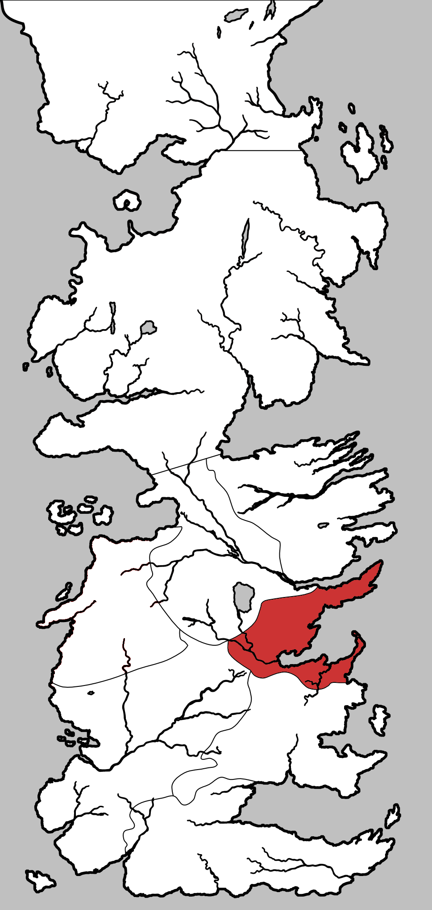

Crownlands
The Crownlands is one of the nine constituent regions of the continent of Westeros. It was never a sovereign nation, instead being contested between the Riverlands, Stormlands and other regions until Aegon the Conqueror seized control of the area during his invasion and made it his primary foothold on the continent.
The Crownlands are ruled directly by the crown on the Iron Throne. These lands include King’s Landing and the surrounding areas, including the town of Rosby, the Kingswood, Crackclaw Point, Massey’s Hook, Dragonstone, and other islands in Blackwater Bay. They are south of the Vale, southeast of the Riverlands, east of the Westerlands, and north of the Reach and the Stormlands.
Bastards in the Crownlands are given the surname Waters.
Map on Next page.

Map on Next page.
